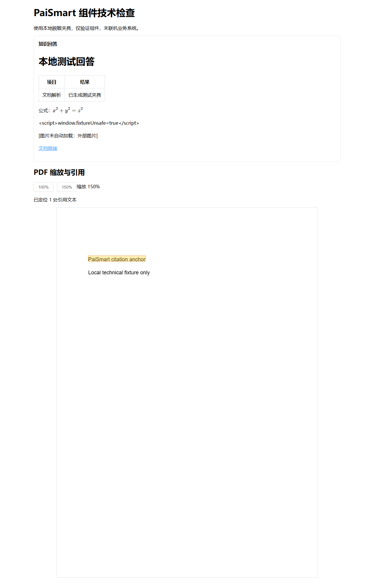
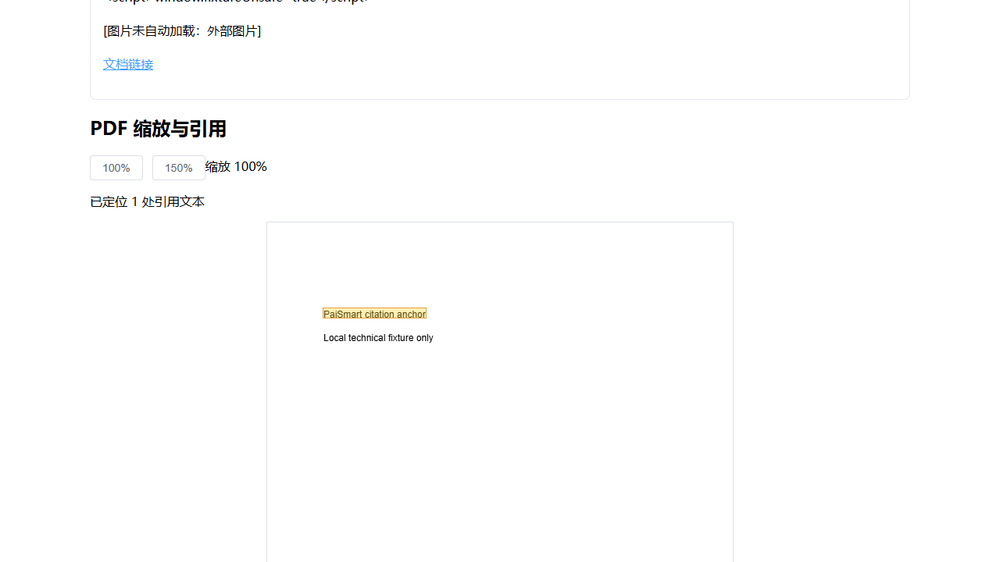
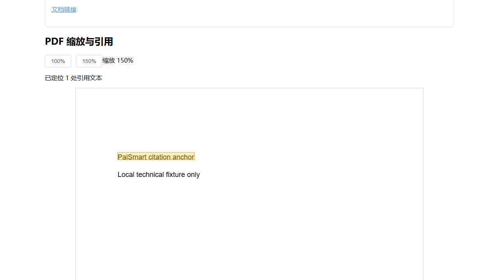

PaiSmart 源码实现与本地技术检查
实现范围与运行边界
新增 若依 PaiSmart 后端模块，由共享 admin 装配，复用平台账户、授权、数据源和托管密钥。管理端包含 16 个业务页面，继续使用共享菜单、路由、Layout、请求封装及权限组件。已实现空间与成员、邀请资格、分片续传、文档处理、检索与问答、冲突与索引治理、评测与人工复核、供应商、额度及限流、充值套餐、作业与运维计划等源码。
提供 V001—V004 的 51 张业务表及版本检查、16 页面和 31 权限的菜单增量预演 SQL、旧 15 表与 Redis 余额及侧文件的离线转换工具、独立解析 Worker 依赖包，以及 正式接口与事件契约。SQL 未执行，菜单预演默认以 ROLLBACK 结束；没有创建、克隆或初始化数据库。
所有业务与外部操作开关默认关闭。未启动真实后端通道、调用付费模型或云 OCR、激活支付、执行对象搬迁和清理、发布或进行 Git 写操作。原工程保留只读。
定向检查的预期与实际结果
| 检查 | 预期 | 实际结果与证据 | 能证明的范围 |
|---|---|---|---|
| 后端边界与工作流 | 权限、版本、任务租约、邀请幂等、账务及支付并发、恢复与算法测试无失败。 | 134 项通过，22 类，失败/错误/跳过均为 0。合并汇总、完整轮原记录、成员及文档 20 项复验、模型资格 6 项复验。 | 结果由完整测试基线和受影响定向复验合并。使用 H2、本地夹具和替身；未证明真实 MySQL、外部系统或完整业务流程。 |
| 前端类型与组件 | PaiSmart 源码类型检查通过；核心显示、状态和调用边界符合夹具预期。 | 类型检查退出 0；5 文件 20 项通过。类型检查日志、组件测试日志。 | 定向组件及类型范围；未使用真实登录、菜单、业务数据或模型。 |
| admin 与管理端构建 | 共享装配兼容，前端生产构建完成，最终包纳入当前模块。 | 均退出 0。admin 装配日志、管理端构建日志。产物哈希核对确认嵌套模块 JAR 与当前模块 JAR 相同，并含可选配置导入。 | 可构建及静态装配；构建时跳过测试，测试证据另列。没有部署或启动 admin。 |
| 默认配置 | 打包不会自动连接、写入、付费、消费任务或执行运维。 | 11 个关键开关均为 false，模块内原许可与 NOTICE 已打包。见 当前打包配置核对。 | 实际包内配置；环境覆盖、运行身份及部署配置仍需逐项确认。 |
| 离线迁移准备 | 明确映射、重复转换、校验及缺失条件的测试通过，不连接原库或目标库。 | 7 项通过。Python 检查日志。 | 离线转换算法和文件输出；未证明真实快照完整、账实一致、导入或切换回退可用。 |
| 独立解析 Worker | 依赖可准备，普通 JAR 与依赖 classpath 可启动独立解析，TXT 输出正确。 | 准备退出 0，依赖包含 241 个 JAR；实际 TXT 解析退出 0。准备日志、脱敏样例、单页输出、运行日志。 | 独立 TXT 实际运行；另有 TXT/HTML/XML/PDF 库级夹具检查。全部声明格式、语言包和外部 OCR 未逐种验证；无操作系统沙箱。 |
| 正式契约 | 当前源码路由和前端调用一致，引用及协议样例按 Schema 接受或拒绝。 | 88 路径、105 HTTP 操作、992 引用、86 前端路径变体匹配。OpenAPI 完整解析器、18 个作业载荷 Schema、16 个有效和 4 个无效 WS 样例、3 个 Kafka 样例检查通过。静态核对日志、复跑说明。 | 静态协议一致性；未执行生成客户端或真实联机协议流程。 |
| 原工程保护 | 只读参考工程的文件内容不发生变化。 | 808 文件、0 变化。哈希基线、复核结果。 | 本轮核对的原工程文件；共享工作区其他任务修改继续保留。 |
正式组件的本地浏览器检查
在仅绑定本机的隔离组件预览中打开正式问答消息和 PDF 组件，使用脱敏夹具与本地单页 PDF。检查表格、公式、引用高亮、100%/150% 缩放；脚本未执行，外部图片未显示或发出网络请求。实际 DOM 和网络核对记录：表格 1、公式 1、图片 0、高亮 1、150% 时 canvas 宽 893、外部资源请求为空。
下列三张实际截图已保存并逐张回读。此项是组件技术检查，不计入真实业务验收；预览服务与专用浏览器会话已结束。



失败记录与定向修复
原失败保留，不覆盖为成功。早期完整检查中的测试夹具缺失 mime_type 和平台用户 status，随后补齐并定向复验。末轮 133 项中出现的 8 项成员/文档错误来自 H2 下重复插入成员版本记录，改为受用户行锁保护的空记录插入及版本 CAS 后，相关 20 项通过。新增当前账号及资格守卫后，模型调用 6 项通过，最新合并总数为 134。
原始失败入口：早期完整轮日志、末轮成员问题日志。前端初次类型/构建及组件预览工具错误在原日志中保留，最终复验结果见上表。没有以降低标准或删除业务项获得通过。
尚未执行与实质限制
- 真实业务验收：31 项未执行。沿用完整迁移设计第 5 节清单；进入获授权环境前保存正式执行清单，逐项截图、回读并独立核对数据。
- 真实 MySQL 约束和数据、平台菜单与 navType 1/2/3、Redis/Kafka/MinIO/ES、真实问答及 WS 恢复均未联机验证。
- 模型与云 OCR 未实际付费调用；微信签名、解密及真实交易未联机验证。Mock 并发测试不能证明支付环境可用。
- 全部文件格式、语言包、完整供应链审查、代表容量和性能指标、迁移快照、旧对象跨环境传输、切换后新增数据及回退未演练。当前对象搬迁使用已配置项目对象存储，不能替代未知旧桶到新桶的独立传输方案。
- 解析进程具备内存、时间、环境和库级限制；未提供操作系统低权限沙箱，部署时仍需落实批准的身份、文件和网络范围。
- 用户接受、真实环境写入、部署与发布尚无执行事实；当前交付为工作区源码、审核文件和本地检查证据。